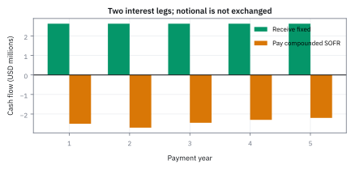
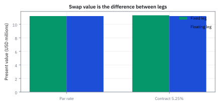
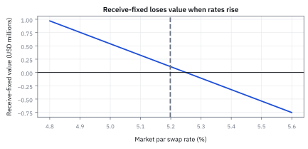
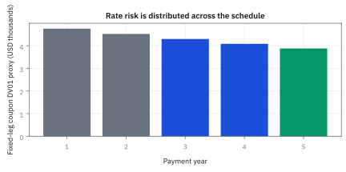
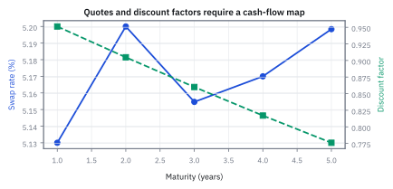
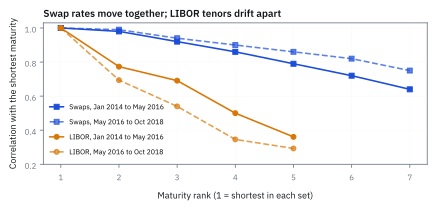
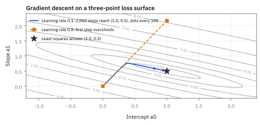

20.2 Swap Rates and the Swap Curve
swap แลกดอกเบี้ยคงที่กับดอกเบี้ยลอยตัว ขาลอยตัวที่ยังไม่รู้อัตรามีค่าวันนี้แค่ $N(1-D_n)$ swap rate จึงเป็นอัตราคงที่ที่ทำให้สองขาเท่ากัน และเดินกลับทางเพื่อแกะ curve ได้
ลูกค้าถือ swap อายุ 5 ปี notional \$50,000,000 ที่รับดอกเบี้ยคงที่ 5.25% ต่อปีและจ่ายดอกเบี้ยลอยตัว จ่ายกันปีละครั้ง วันนี้ discount factor ปีที่ 1 ถึง 5 คือ 0.9512, 0.9048, 0.8600, 0.8170 และ 0.7760 (ตัวเลขสมมติ) swap ใหม่อายุเท่ากันควรมีอัตราคงที่เท่าไร และสัญญาเก่ามีค่าเท่าไร? เพื่อนร่วมโต๊ะคิดว่าสัญญาเก่าได้เปรียบตลาดราว 5.16 bp ต่อปี ห้าปีคิดเป็น \$128,945.23 ถูกไหม?
ลองตอบก่อนเปิดเฉลย
อัตรา swap วันนี้คือ $(1-0.7760)/4.3090=5.198422\%$ สัญญาเก่ามีค่า \$111,125.00 ไม่ใช่ \$128,945.23 ส่วนต่างปีละ \$25,789.05 ต้องคิดลดทีละปี จึงคูณด้วยผลบวกของ discount factor 4.3090 ไม่ใช่ 5 และที่น่าสนใจกว่าคือขาลอยตัวที่ยังไม่รู้อัตราสักงวด มีค่าวันนี้แน่นอน \$11,200,000
สิ่งที่เราจะสร้าง
20.1 สร้าง discount factor จากราคาพันธบัตร หน้านี้ใช้มันกับสัญญาที่ใหญ่ที่สุดในตลาดดอกเบี้ย คือ interest rate swap ที่แลกดอกเบี้ยคงที่กับดอกเบี้ยลอยตัวบนเงินต้นสมมติก้อนเดียวกัน ขาคงที่คิดได้ทันทีแบบ 18.2 ขาลอยตัวดูเหมือนคิดไม่ได้เพราะยังไม่รู้อัตรา แต่ FRA ของ 20.1 ล็อกได้ทุกงวด
ลำดับคือ ขาคงที่และ annuity แล้วขาลอยตัวที่หักล้างกันเป็นลูกโซ่ เหตุผลที่ floating rate note ราคาเท่าหน้าตั๋ว par swap rate มูลค่าสัญญาเก่าและ DV01 การแกะ curve จาก swap rate กติกาจริงของ swap 2 ปี เหตุผลที่บริษัททำ swap แล้วดูข้อมูลจริงว่าแต่ละอายุเดินด้วยกันแค่ไหน และการ fit เส้นตรงด้วย gradient descent
ศัพท์ที่ใช้ในหัวข้อนี้
- Interest rate swap และ notional
- สัญญาแลกกระแสดอกเบี้ยสองชุดบนเงินต้นสมมติ (notional) ก้อนเดียวกัน เงินต้นไม่ถูกแลกจริงเพราะเท่ากันสองฝั่ง ใช้เปลี่ยนหนี้อัตราลอยตัวเป็นอัตราคงที่หรือกลับกัน
- Fixed leg และ floating leg
- fixed leg จ่ายอัตราคงที่ที่ตกลงวันเซ็นทุกงวด floating leg จ่ายอัตราอ้างอิงที่รู้ค่าตอนต้นแต่ละงวด (reset) แล้วจ่ายตอนปลายงวด
- SOFR และ LIBOR
- อัตราอ้างอิงของขาลอยตัว LIBOR คืออัตราที่ธนาคารใหญ่แจ้งว่ากู้กันเอง ใช้กันจนถึงปี 2023 SOFR คืออัตรา overnight ของ repo ที่มีพันธบัตรรัฐบาลสหรัฐฯ ค้ำ ทบกันทั้งงวดแล้วใช้แทน LIBOR ในตลาดดอลลาร์
- Par swap rate
- อัตราคงที่ที่ทำให้ swap ใหม่มีค่าศูนย์วันเซ็น ไม่มีใครต้องจ่ายใครล่วงหน้า เป็นตัวเลขที่ตลาด quote สำหรับแต่ละอายุ
- Annuity
- ผลบวกของ discount factor คูณความยาวงวดของขาคงที่ คือมูลค่าวันนี้ของการได้ \$1 ต่อปีทุกงวด ใช้แปลงส่วนต่างของอัตราต่อปีเป็นเงินวันนี้
- Receive-fixed และ pay-fixed
- ฝั่งรับอัตราคงที่ได้ประโยชน์เมื่อ swap rate ตลาดลง ฝั่งจ่ายอัตราคงที่ได้ประโยชน์เมื่อขึ้น มูลค่าของสองฝั่งเท่ากันแต่เครื่องหมายตรงข้าม
- DV01
- เงินที่มูลค่าสัญญาเปลี่ยนเมื่ออัตราขยับ 1 bp (0.01 จุด) ใช้กำหนดขนาด hedge และเพดานความเสี่ยงของโต๊ะ แบบเดียวกับ 18.2
สัญลักษณ์และหน่วย
| สัญลักษณ์ | ความหมาย | หน่วย |
|---|---|---|
| $N$ | notional | \$ |
| $T_i,\ \delta_i$ | วันจ่ายงวดที่ $i$ และความยาวงวด (swap รายปีมี $\delta_i=1$) | ปี |
| $D_i$ | discount factor $D(0,T_i)$ จาก 20.1 โดย $D_0=1$ | \$ ต่อ \$ |
| $K,\ S_n$ | อัตราคงที่ของสัญญา และ par swap rate อายุ $n$ งวด | ต่อปี |
| $A_n$ | annuity $\sum_{i=1}^{n}\delta_iD_i$ | ปี |
| $F_i,\ L_i$ | forward rate แบบ simple ของงวด $i$ วันนี้ และอัตราจริงที่จะ reset ตอนต้นงวด | ต่อปี |
| $V_{\rm rec}$ | มูลค่าของฝั่งรับคงที่ | \$ |
ขั้นที่ 1 — ขาคงที่: เงินเท่ากันทุกงวด และ annuity
เริ่มจากขาที่ง่าย ขาคงที่จ่าย $NK\delta_i$ ทุกงวด เป็นเงินที่รู้ล่วงหน้าทั้งหมด จึงคิดลดทีละก้อนแล้วบวกแบบ 18.2 ได้ทันที เทคนิคเดียวคือดึง $NK$ ซึ่งเหมือนกันทุกงวดออกมาข้างหน้า แล้วตั้งชื่อก้อนที่เหลือ
$A_n$ คือมูลค่าวันนี้ของการได้ \$1 ต่อปีทุกงวด มีหน่วยเป็นปีและไม่ขึ้นกับ $K$ จึงคิดครั้งเดียวใช้กับทุกอัตรา swap รายปีมี $\delta_i=1$ annuity จึงเป็นผลบวกของ discount factor ตรง ๆ
ลูกค้าได้ \$2,625,000 ต่อปีห้างวด มีค่าวันนี้ \$11,311,125 ไม่ใช่ \$13,125,000 เพราะเงินปีหลังมีค่าน้อยกว่า
Figure 20.2a — swap แลกเฉพาะดอกเบี้ย ไม่แลกเงินต้น

มุมของฝั่งรับคงที่: แท่งบวกคือ \$2.625 ล้านทุกปี ($N=\$50$ ล้าน คูณ 5.25%) แท่งลบคือดอกเบี้ยลอยตัวที่จ่าย 2.50, 2.70, 2.45, 2.30 และ 2.20 ล้าน ซึ่งเป็นตัวเลขสมมติของอัตราที่อาจเกิดจริง ไม่ใช่ forward ของวันนี้ (forward ให้ 2.565, 2.564, 2.605, 2.632 และ 2.642 ล้านตามขั้นที่ 2) ไม่มีแท่งเงินต้นตอนจบเพราะเงินต้นไม่ถูกแลก
ขั้นที่ 2 — ขาลอยตัว: ล็อกทุกงวดด้วย FRA แล้วพจน์กลางหักกันหมด
ขาลอยตัวจ่าย $N\delta_iL_i$ โดย $L_i$ รู้ค่าตอนต้นงวด วันนี้ยังไม่รู้ แต่ 20.1 ขั้นที่ 10 บอกว่าล็อกเงินก้อนนี้ได้ด้วย FRA ที่อัตรา $F_i$ โดยไม่เสียเงินวันนี้ เงินสุ่มก้อนนั้นจึงมีค่าเท่ากับเงินแน่นอน $N\delta_iF_i$ ที่ $T_i$ แทน $F_i$ ด้วย discount factor แล้วลองสองงวดแรกด้วยมือ
คูณ forward ด้วย discount factor ของงวดเดียวกัน ตัวส่วนตัดกันพอดี เหลือผลต่างของ discount factor สองตัวที่ติดกัน พอบวกทุกงวด $D_1$ ที่ถูกลบในงวดแรกถูกบวกคืนในงวดสอง พจน์กลางหักกันหมดแบบ telescoping เหลือ $D_0=1$ ลบตัวสุดท้าย
ห้างวดมีค่า \$2.44, \$2.32, \$2.24, \$2.15 และ \$2.05 ล้าน รวม \$11.2 ล้าน สูตรสั้นนี้ใช้ได้เมื่อ forward กับการคิดลดมาจากเส้นเดียวกัน ถ้าใช้สองเส้น (คิดลดด้วยเส้น OIS ทาย forward ด้วยเส้นของ index) ต้องบวกทีละงวดตามแถวที่สอง
ขั้นที่ 3 — อีกมุม: floating rate note ราคาเท่าหน้าตั๋วทุกวัน reset
ทำไม $N(1-D_n)$ สมเหตุสมผล คิดถึง floating rate note ที่จ่ายคูปองตามอัตราตลาดทุกงวดแล้วคืนเงินต้น $N$ ให้ $r_k$ คืออัตราต่องวดที่รู้ตอนต้นงวด $k$ ซึ่งเป็นอัตราเดียวกับที่ใช้คิดลดงวดนั้น แล้วย้อนจากวัน reset สุดท้ายทีละงวดแบบต้นไม้ของ 18.3
ที่วัน reset สุดท้าย เงินที่เหลือคือ $N(1+r_n)$ คิดลดด้วย $r_n$ ตัวเดียวกันจึงได้ $N$ พอดี ถอยทีละงวด ทุกวัน reset มีค่า $N$ ไม่ว่าอัตราในอนาคตจะเป็นเท่าไร เพราะคูปองจ่ายเท่าอัตราที่ใช้คิดลดพอดี ขาลอยตัวของ swap คือ note นี้ที่ไม่มีเงินต้นคืน จึงเท่ากับ $N$ ลบมูลค่าวันนี้ของเงินต้น
ตัวอย่าง: note \$1,000,000 สี่งวด ถ้าทุกงวดเป็น 3% คูปอง \$30,000 มีค่าวันนี้ 29,126.21, 28,277.88, 27,454.25 และ 26,654.61 รวม \$111,512.95 เงินต้นมีค่า \$888,487.05 รวมเป็น \$1,000,000 พอดี ถ้าอัตราสี่งวดเป็น 2%, 5%, 3.5% และ 4% ก็ยังได้ \$1,000,000
ขั้นที่ 4 — par swap rate: อัตราคงที่ที่ทำให้สองขาเท่ากัน
swap ใหม่ต้องมีค่าศูนย์วันเซ็น เพราะไม่มีใครจ่ายใครล่วงหน้า ตั้งสองขาเท่ากันแล้วตัด $N$ ทิ้ง อัตรา swap จึงไม่ขึ้นกับขนาดสัญญา แถวสุดท้ายได้จากการแทน $N(1-D_n)$ ด้วยผลบวกของขั้นที่ 2 แทนสูตรย่อ
forward ห้าปีคือ 5.1304, 5.1282, 5.2093, 5.2632 และ 5.2835% น้ำหนัก $D_i/A_n$ คือ 0.2207, 0.2100, 0.1996, 0.1896 และ 0.1801 รวมเป็น 1 swap rate คือค่าเฉลี่ยถ่วงของ forward ที่ปีใกล้หนักกว่า ค่าเฉลี่ยธรรมดา 5.2029% จึงสูงไป เพราะให้ปีไกลที่ forward สูงหนักเท่าปีใกล้
swap rate จึงไม่ใช่คำทำนายอัตราในอนาคต มันคืออัตราคงที่ที่ทำให้สองขามีค่าเท่ากันพอดี ถ้าตลาด quote อัตราอื่น คนจะทำ swap คู่กับ FRA ทีละงวดแล้วเก็บส่วนต่าง
ขั้นที่ 5 — สัญญาเก่าที่ 5.25% มีค่าเท่าไร และ DV01
โจทย์ให้อะไรมาบ้าง: ลูกค้ารับคงที่ 5.25% จ่ายลอยตัว บน \$50,000,000 เหลือห้าปี ตลาดวันนี้ให้ $S_5=5.198422\%$ และ $A_5=4.309$ จากขั้นที่ 1 ถึง 4
คำตอบ: สัญญาเก่ามีค่า +\$111,125.00 สำหรับฝั่งรับคงที่ (และ −\$111,125.00 สำหรับคู่สัญญาที่จ่ายคงที่) ส่วนต่าง 5.1578 bp ต่อปีเป็นเงิน \$25,789.05 ต่อปี แต่ละปีต้องคิดลด จึงคูณด้วย 4.309 ไม่ใช่ 5 คำตอบ \$128,945.23 ของเพื่อนลืมคิดลด DV01 \$21,545 คือมูลค่าที่เปลี่ยนเมื่อ swap rate ตลาดขยับ 1 bp และ $5.1578(21{,}545)=111{,}125$
ตรวจเองใน 10 วินาที: $0.0525(4.309)=0.2262225$ ลบ $0.224$ ได้ $0.0022225$ คูณ \$50 ล้านได้ \$111,125 พอดี
Figure 20.2b — มูลค่าของสองขาที่ par rate และที่ 5.25%

กลุ่มซ้าย (Par rate) คือขาคงที่ที่ 5.198422% กับขาลอยตัว สูงเท่ากัน \$11.2 ล้าน กลุ่มขวา (Contract 5.25%) ขาคงที่ \$11.311125 ล้าน ขาลอยตัวยัง \$11.2 ล้าน ส่วนต่าง \$111,125 คือมูลค่าของขั้นที่ 5 ขาลอยตัวไม่เปลี่ยนเพราะไม่ขึ้นกับ $K$ แกนตั้งเริ่มที่ศูนย์ ส่วนต่าง 1% ของความสูงจึงมองแทบไม่เห็น
Figure 20.2c — มูลค่าฝั่งรับคงที่เมื่อ swap rate ตลาดเปลี่ยน

แกนนอนคือ swap rate ตลาด 4.8% ถึง 5.6% (81 จุด) แกนตั้งคือ $N(K-s)A_5$ เป็นล้านดอลลาร์ ได้ +0.970 ที่ 4.8% และ −0.754 ที่ 5.6% เส้นตัดศูนย์ที่ 5.25% ส่วนเส้นประคือ par rate วันนี้ 5.198422% ซึ่งมูลค่าเป็น +0.111 ล้าน เส้นเป็นเส้นตรงพอดีเพราะภาพตรึง $A_5=4.309$ ไว้ ของจริงเมื่ออัตราขยับ discount factor ขยับด้วย $A_5$ จึงเปลี่ยนและเส้นโค้งเล็กน้อย ความชันคือ \$21,545 ต่อ bp
Figure 20.2d — DV01 ของขาคงที่แยกตามปีที่จ่าย

แต่ละแท่งคือ $N D_i(0.0001)$ เป็นพันดอลลาร์: 4.756, 4.524, 4.300, 4.085 และ 3.880 รวมเป็น 21.545 คือ DV01 ของขั้นที่ 5 ความเสี่ยงไม่ได้อยู่ที่ปีที่ 5 จุดเดียว แต่กระจายตามวันจ่าย ตัวเลขแยกแบบนี้ (bucketed DV01) บอกว่าต้อง hedge ที่อายุไหน และจับความเสี่ยงที่เส้นบิดได้ ซึ่ง DV01 รวมตัวเดียวมองไม่เห็น (ดู 18.2 ขั้นที่ 11) สีของแท่งไม่มีความหมาย
ขั้นที่ 6 — เดินกลับทาง: แกะ discount factor จาก swap rate
ตลาดไม่ได้ให้ discount factor ตลาด quote swap rate ของแต่ละอายุ เพราะ swap ซื้อขายคล่องกว่าพันธบัตรในหลายช่วงอายุ จึงเดินกลับทาง: รู้ $S_n$ และ discount factor ของอายุที่สั้นกว่า ให้ $B_{n-1}$ คือผลบวกของตัวที่รู้แล้ว แยกพจน์สุดท้ายที่ยังไม่รู้ออกมา
ย้ายทุกพจน์ที่มี $D_n$ ไปฝั่งเดียวแล้วหาร เหมือนการแกะ note ใน 20.1 ขั้นที่ 4 ทุกประการ เพราะ swap คือพันธบัตรคูปอง $S_n$ ที่ราคา par: ขาลอยตัวบวกเงินต้นมีค่า $N$ พอดี ต้องไล่จากอายุสั้นไปยาวด้วยเหตุผลเดียวกัน
par quote ห้าอายุของเส้นนี้คือ 5.1304, 5.1293, 5.1546, 5.1797 และ 5.1984% แกะกลับได้ discount factor ทั้งห้าตัวเดิม ใช้ quote เต็มความละเอียดเพราะ quote ที่ปัดทำให้ discount factor เพี้ยน (โจทย์ข้อ 2)
Figure 20.2e — swap rate และ discount factor คือข้อมูลชุดเดียวกัน

เส้นทึบ (แกนซ้าย) คือ par swap rate 5.13, 5.20, 5.1546, 5.17 และ 5.1984% ที่ 1 ถึง 5 ปี เส้นประ (แกนขวา) คือ discount factor 0.9512 ถึง 0.776 ข้อบกพร่องของภาพ: จุด 2 ปีควรเป็น 5.1293% ไม่ใช่ 5.20 และจุด 4 ปีควรเป็น 5.1797% ไม่ใช่ 5.17 หักขึ้นที่ 2 ปีในภาพจึงไม่มีจริง par quote ของเส้นนี้เกือบแบน และได้จากสมการเงินสดของขั้นที่ 6 ไม่ใช่การใส่ quote ลงใน exponential ตรง ๆ
ขั้นที่ 7 — กติกาจริง: swap 2 ปี notional \$1,000,000
swap มาตรฐานของตลาดดอลลาร์ช่วงที่ยังใช้ LIBOR มีอายุนิยม 2, 5, 10 และ 30 ปี ขาคงที่จ่ายทุกครึ่งปี ขาลอยตัวจ่าย 3M LIBOR ทุกไตรมาส อัตรากำหนดตอนต้นงวดแล้วจ่ายตอนปลาย ลอง swap 2 ปีอัตราคงที่ 2.9894% ที่ LIBOR สองงวดแรกเป็น 2.4012% และ 2.7293%
ขาคงที่รู้ทุกงวดตั้งแต่วันแรก สี่งวดละ \$14,947 ขาลอยตัวมีแปดงวด วันนี้รู้แค่งวดแรก \$6,003 งวดที่สองรู้ค่าเมื่อถึงเดือนที่ 3 ทั้งสองขาจ่ายคนละความถี่ จึงหักกลบกันเฉพาะวันที่จ่ายตรงกัน
แถวสุดท้ายคือสูตรของขั้นที่ 4 เมื่อทุกงวดยาว $\Delta=1/2$ ปี คูณ 100 ให้เป็นเปอร์เซ็นต์ และเขียน discount factor เป็น $P(t,T)$ ของ 20.1 ตัวอย่างนี้ใช้ครึ่งปีเท่ากันทุกงวด ของจริงใช้วันจ่ายจริงและกติกานับวัน (ดูหัวข้อความผิด)
ขั้นที่ 8 — ทำไมบริษัททำ swap: comparative advantage
บริษัท A ต้องการกู้ลอยตัว \$1 ล้าน บริษัท B ต้องการกู้คงที่ \$1 ล้าน อัตราสมมติ: A กู้คงที่ได้ 4.0% หรือลอยตัว $L+0.3\%$ ส่วน B กู้คงที่ได้ 5.2% หรือลอยตัว $L+1.0\%$ ดูส่วนต่างของส่วนต่างก่อน แล้วลองให้แต่ละคนกู้ฝั่งที่ได้เปรียบแล้วแลกดอกเบี้ยกัน
B แพงกว่า A ทั้งสองตลาด แต่แพงกว่าน้อยกว่าในตลาดลอยตัว (0.7% เทียบ 1.2%) จึงได้เปรียบเชิงเปรียบเทียบฝั่งลอยตัว A ได้เปรียบฝั่งคงที่ A กู้คงที่ 4.0% B กู้ลอยตัว $L+1.0\%$ แล้วทำ swap: B จ่ายคงที่ 3.95% ให้ A และ A จ่าย $L$ ให้ B
A จ่ายสุทธิ $L+0.05\%$ แทน $L+0.3\%$ B จ่าย 4.95% แทน 5.2% ประหยัดคนละ 0.25% หรือ \$2,500 ต่อปีบน \$1 ล้าน รวมเท่ากับ $G$ ถ้าผ่าน dealer ส่วนหนึ่งของ $G$ เป็นค่าธรรมเนียม ส่วนต่างเหล่านี้บางส่วนคือค่าความเสี่ยงเครดิตที่ต่างกัน จึงไม่ใช่เงินฟรีทั้งหมด
ขั้นที่ 9 — ข้อมูลจริง: อัตราแต่ละอายุเดินด้วยกันแค่ไหน
ถ้าจะ hedge swap อายุหนึ่งด้วยอีกอายุ ต้องรู้ว่ามันเดินด้วยกันแค่ไหน ข้อมูลรายวันของตลาดดอลลาร์ 2 มกราคม 2014 ถึง 11 ตุลาคม 2018 แบ่งสองช่วงที่ 24/25 พฤษภาคม 2016 ให้ correlation ในสองตารางข้างล่าง และลองทาย swap อายุหนึ่งด้วยเส้นตรงของอีกอายุ วัดความพอดีด้วย $R^2$
$y_t$ คือ swap rate อายุที่อยากทาย $x_t$ คืออายุที่ใช้ทาย $R^2$ คือสัดส่วนความแปรผันของ $y$ ที่เส้นตรงอธิบายได้ ตารางแรกเป็น LIBOR 1, 2, 3, 6 และ 12 เดือน ตารางที่สองเป็น swap 2, 3, 5, 7, 10, 15 และ 30 ปี แต่ละช่องคือช่วงแรก / ช่วงสอง
swap ทุกคู่สูงกว่า 0.64 และสูงขึ้นในช่วงสอง LIBOR ต่ำถึง 0.29 และส่วนใหญ่ต่ำลง เหตุผลหนึ่งอยู่ในขั้นที่ 4: swap คือค่าเฉลี่ยของ forward swap 5 ปีกับ 7 ปีใช้ forward ห้าปีแรกร่วมกัน จึงเดินด้วยกันแทบเลี่ยงไม่ได้
correlation ของ LIBOR ห้าอายุ: ช่วงแรก / ช่วงสอง
| อายุ | 2M | 3M | 6M | 12M |
|---|---|---|---|---|
| 1M | 0.773 / 0.694 | 0.691 / 0.540 | 0.500 / 0.346 | 0.361 / 0.293 |
| 2M | 0.810 / 0.681 | 0.667 / 0.546 | 0.516 / 0.474 | |
| 3M | 0.744 / 0.739 | 0.582 / 0.653 | ||
| 6M | 0.847 / 0.863 |
correlation ของ swap เจ็ดอายุ: ช่วงแรก / ช่วงสอง
| อายุ | 3y | 5y | 7y | 10y | 15y | 30y |
|---|---|---|---|---|---|---|
| 2y | 0.98 / 0.99 | 0.92 / 0.94 | 0.86 / 0.90 | 0.79 / 0.86 | 0.72 / 0.82 | 0.64 / 0.75 |
| 3y | 0.96 / 0.97 | 0.92 / 0.95 | 0.85 / 0.91 | 0.78 / 0.87 | 0.70 / 0.81 | |
| 5y | 0.98 / 0.99 | 0.94 / 0.97 | 0.89 / 0.94 | 0.83 / 0.89 | ||
| 7y | 0.99 / 0.99 | 0.95 / 0.97 | 0.90 / 0.93 | |||
| 10y | 0.99 / 0.99 | 0.95 / 0.97 | ||||
| 15y | 0.99 / 0.99 |
ทาย swap อายุหนึ่งด้วยเส้นตรงของอายุอื่น (least squares)
| สมการ | ช่วง | $a_0$ | ตัวคูณ | $R^2$ |
|---|---|---|---|---|
| 5 ปีบน 2 ปี | แรก | 1.8079 | −0.2480 | 4% |
| 5 ปีบน 2 ปี | สอง | 0.4369 | 0.9032 | 97% |
| 5 ปีบน 2 ปี | ทั้งหมด | 1.038765 | 0.62619 | 77% |
| 30 ปีบน 15 ปี | แรก | 0.0243 | 1.0816 | 99.5% |
| 30 ปีบน 15 ปี | สอง | 0.4483 | 0.8516 | 99.5% |
| 30 ปีบน 15 ปี | ทั้งหมด | 0.19385 | 0.986361 | 95.4% |
| 30 ปีบน 2, 5, 10 ปี | แรก | 0.3504 | 0.0124, −0.7662, 1.6149 | 99.4% |
5 ปีบน 2 ปีเปลี่ยนจากแทบไม่สัมพันธ์ ($R^2$ 4% และความชันติดลบ) เป็นเกือบพอดี (97%) เมื่อข้ามช่วง ส่วนปลายยาวผูกกันแน่นทุกช่วง ในสมการสามตัวแปร swap 10 ปีมีน้ำหนักมากสุด 5 ปีเป็นลบ และ 2 ปีแทบไม่มีผล
Figure 20.2f — swap แต่ละอายุเดินด้วยกัน LIBOR แต่ละอายุแยกกันมากกว่า

แถวแรกของสองตาราง: correlation ของอายุสั้นสุดกับอายุอื่น แกนนอนคือลำดับอายุ (1 คืออายุสั้นสุดของแต่ละชุด ไม่ใช่ปี) เส้นทึบคือช่วงมกราคม 2014 ถึงพฤษภาคม 2016 เส้นประคือพฤษภาคม 2016 ถึงตุลาคม 2018 swap (สี่เหลี่ยม) ลดช้าและสูงขึ้นในช่วงสอง LIBOR (วงกลม) ลดเร็วและต่ำลงในช่วงสอง
ขั้นที่ 10 — fit เส้นตรงด้วย gradient descent และทำไม learning rate ใหญ่ไปถึงระเบิด
least squares มีสูตรตรง แต่แบบจำลองส่วนใหญ่ของบทนี้ (เช่น 20.5) ไม่มี ต้องหาจุดต่ำสุดของ loss ด้วยการเดินทีละขั้นสวนทาง gradient แบบ 12.7 ลองกับข้อมูลสามจุด $x=(1,2,3)$ $y=(1.5,2.0,2.5)$ ซึ่งคำตอบคือ $a_0=1$ $a_1=0.5$ เริ่มที่ศูนย์ ให้ $e_t=a_0+a_1x_t-y_t$
ที่ศูนย์ แบบจำลองทายศูนย์ทุกจุด $e_t$ คือ −1.5, −2.0 และ −2.5 ค่าเฉลี่ย −2 และค่าเฉลี่ยของ $e_tx_t$ คือ $-13/3$ ก้าวด้วย $\gamma=0.1$ loss ลดจาก 2.0833 เหลือ 0.4370 ก้าวด้วย $\gamma=0.5$ loss กลับโตเป็น 6.4815
ทำไม: loss เป็นกำลังสอง ความคลาดจากคำตอบถูกคูณด้วย $I-\gamma H$ ทุกก้าว เมื่อ $H$ คือ Hessian ของ 12.3 มีสมาชิก 1, 2, 2 และ 14/3 (ค่าเฉลี่ยของ $1$, $x$ และ $x^2$) trace 17/3 และ determinant 2/3 ให้สองแถวรองสุดท้าย ถ้า $|1-\gamma\lambda|\gt 1$ ความคลาดโตทุกก้าว จึงต้องมี $\gamma\lt 0.3606$
ทิศที่ราบมี $\lambda=0.1202$ ที่ $\gamma=0.1$ ความคลาดหดแค่ 1.2% ต่อก้าว ต้องเดิน 1,115 ก้าวจึงเข้าใกล้คำตอบภายใน $10^{-6}$ บนข้อมูล swap จริง (5 ปีบน 2 ปี ทั้งช่วง) learning rate 0.3 ยังเข้าใกล้คำตอบ แต่ 0.33 ระเบิด เพดานของข้อมูลชุดนั้นจึงอยู่ระหว่างสองค่านี้
Figure 20.2g — learning rate พอดีเดินถึงก้นหลุม ใหญ่ไปกระโดดข้าม

เส้นชั้นคือ $J$ ของข้อมูลสามจุดที่ระดับ 0.02 ถึง 6 แกนนอนคือ $a_0$ แกนตั้งคือ $a_1$ หลุมยาวและแคบตามทิศ $\lambda=0.1202$ เส้นสีน้ำเงินคือ 2,000 ก้าวที่ $\gamma=0.1$ มีจุดทุก 100 ก้าว ไหลลงหุบก่อนแล้วค่อยคลานตามหุบไปที่ดาว (1.0, 0.5) เส้นประสีส้มคือก้าวแรกที่ $\gamma=0.5$ จาก (0, 0) ไป (1.0, 2.1667) ซึ่งอยู่สูงกว่าจุดเริ่ม
Nelder–Mead และ gradient descent บนข้อมูล swap จริง
| วิธี | สมการและช่วง | จุดเริ่ม | จุดที่ได้ |
|---|---|---|---|
| Nelder–Mead | 5 ปีบน 2 ปี แรก | (−100, −100) | (1.8079, −0.2480) |
| Nelder–Mead | 30 ปีบน 10 ปี แรก | (−100, −100) | (−0.08145, 1.26867) |
| Nelder–Mead | 30 ปีบน 2, 5, 10 ปี แรก | (−100, −100, 100, 200) | (0.3504, 0.0124, −0.7662, 1.6149) |
| Nelder–Mead | 5 ปีบน 2 ปี สอง | (−100, −100) | (0.437067, 0.90311) |
| Nelder–Mead | 30 ปีบน 10 ปี สอง | (−100, −100) | (0.76711, 0.762174) |
| Nelder–Mead | 30 ปีบน 2, 5, 10 ปี สอง | (−100, −100, 100, 200) | (0.2184, 0.3723, −1.4662, 2.0193) |
| Nelder–Mead | 5 ปีบน 2 ปี ทั้งหมด | (−100, −100) | (1.03876, 0.62619) |
| Nelder–Mead | 30 ปีบน 10 ปี ทั้งหมด | (−100, −100) | (0.55861, 0.9203) |
| Nelder–Mead | 30 ปีบน 2, 5, 10 ปี ทั้งหมด | (−100, −100, 100, 200) | (0.3102, 0.0499, −0.8208, 1.6563) |
| gradient descent $\gamma=0.005$ | 5 ปีบน 2 ปี ทั้งหมด | (−100, −100) | 300 ก้าวได้ (−14.82315, 10.68748) ยังไม่ถึง |
| gradient descent $\gamma=0.1$ | 5 ปีบน 2 ปี ทั้งหมด | (−100, −100) | 264 ก้าวได้ (1.035979, 0.627968) |
| gradient descent $\gamma=0.2$ | 5 ปีบน 2 ปี ทั้งหมด | (−100, −100) | 140 ก้าวได้ (1.037465, 0.6270249) |
| gradient descent $\gamma=0.3$ | 5 ปีบน 2 ปี ทั้งหมด | (−100, −100) | 95 ก้าวได้ (1.037890, 0.626750) |
| gradient descent $\gamma=0.33$ | 5 ปีบน 2 ปี ทั้งหมด | (−100, −100) | ระเบิด loss และ parameter พุ่งไม่หยุด |
Nelder–Mead ไม่ใช้ gradient ได้คำตอบเดียวกับ least squares ทุกหลักในแถวที่เทียบได้ เช่น (1.03876, 0.62619) ส่วน gradient descent ยิ่ง $\gamma$ ใกล้เพดานยิ่งเข้าใกล้คำตอบเร็ว ข้อควรรู้: ตาราง least squares ใช้ 30 ปีบน 15 ปี แต่ Nelder–Mead ใช้ 30 ปีบน 10 ปี สองชุดนี้จึงเทียบกันตรง ๆ ไม่ได้
คำถามที่ควรถามออกมาดัง ๆ
ทำไมไม่แลกเงินต้น? เพราะเงินต้นเท่ากันและเป็นสกุลเดียวกัน แลกไปแลกกลับก็หักกันเป็นศูนย์ notional มีไว้คูณดอกเบี้ยเท่านั้น และแต่ละงวดจ่ายกันแค่ส่วนต่างสุทธิ swap ข้ามสกุลเงินต่างออกไป เพราะเงินต้นคนละสกุลมีค่าไม่เท่ากันตลอดอายุ จึงแลกจริง
ความเสี่ยงอัตราของ swap อยู่ที่ขาไหน? เติมเงินต้น $N$ ที่ปลายทั้งสองขาได้โดยไม่เปลี่ยนมูลค่าสุทธิ ฝั่งรับคงที่จึงเท่ากับถือพันธบัตรคูปอง $K$ และชอร์ต floating rate note ซึ่งมีค่า $N$ ทุกวัน reset จึงแทบไม่ไวต่ออัตรา ความเสี่ยงของ swap จึงเป็นความเสี่ยงของพันธบัตรคูปองแบบ 18.2 และ DV01 ต่อ swap rate คือ $NA_5(0.0001)$
correlation สูงแปลว่า hedge ได้ดีเสมอไหม? ไม่ ตารางของขั้นที่ 9 แสดงว่าความสัมพันธ์เปลี่ยนตามช่วงเวลา และถ้าคำนวณจากระดับอัตราที่มีแนวโน้มร่วมกัน correlation จะดูสูงกว่าของการเปลี่ยนแปลงรายวัน การ hedge ต้องใช้การเปลี่ยนแปลง และตรวจซ้ำเป็นระยะ
ความผิดที่ให้คำตอบผิดแบบเงียบ ๆ
ลืมคิดลดส่วนต่าง: $5(25{,}789.05)=\$128{,}945.23$ เกินมูลค่าจริง \$111,125.00 ไป \$17,820.23 ส่วนต่างของอัตราต้องคูณ annuity ไม่ใช่จำนวนปี
ใช้ค่าเฉลี่ยธรรมดาของ forward เป็น swap rate: ได้ 5.2029% แทน 5.198422% swap ใหม่ \$50 ล้านที่อัตรานี้มีค่าไม่เป็นศูนย์ แต่เพี้ยนไป \$9,661.90
เอา swap rate ไปคิดลดเงินก้อนเดียว: \$50 ล้านในปีที่ 5 หารด้วย $1.051984^5$ ได้ \$38,808,233.93 แต่ของจริงคือ $50{,}000{,}000(0.776)=\$38{,}800{,}000$ เกินไป \$8,233.93 swap rate เป็นค่าเฉลี่ยของหลายวันจ่ายแบบ par yield ใน 20.1
ลืมกติกานับวัน: ครึ่งปีที่มี 182 วันแบบ actual/360 ให้ขาคงที่ $10^6(0.029894)(182/360)=\$15{,}113.08$ ไม่ใช่ \$14,947 ต่างงวดละ \$166.08 ต่อ \$1 ล้าน
เชื่อ hedge ที่ fit จากช่วงเดียว: 5 ปีบน 2 ปีมี $R^2$ 4% และความชัน −0.248 ในช่วงแรก แต่ 97% และ 0.9032 ในช่วงสอง hedge ratio จากช่วงหนึ่งอาจผิดทั้งขนาดและเครื่องหมายในอีกช่วง
สลับฝั่ง: +\$111,125 เป็นของฝั่งรับคงที่ ฝั่งจ่ายคงที่ได้ −\$111,125 ถ้าสลับเครื่องหมาย รายงานกำไรขาดทุนผิดไป \$222,250
ใช้ทำอะไรบนโต๊ะจริง
บริษัทที่กู้ลอยตัวใช้ swap ล็อกต้นทุนเป็นอัตราคงที่ ผู้ออกพันธบัตรคงที่ใช้ swap แปลงกลับเป็นลอยตัว ธนาคารใช้ swap rate สร้าง curve ช่วงยาวเพราะซื้อขายคล่องกว่าพันธบัตร และรายงาน DV01 แยกตามอายุทุกวัน มูลค่าสัญญาเก่าคิดแบบขั้นที่ 5 โดยไม่ต้องจำลองอัตราลอยตัวในอนาคตเลย
ตั้งแต่หลังปี 2008 swap ที่มีหลักประกันคิดลดด้วยเส้น OIS (ในดอลลาร์ปัจจุบันคือเส้น SOFR) และ swap เองก็อ้างอิง SOFR แทน LIBOR ตั้งแต่ปี 2023 สูตรของหน้านี้ยังใช้ได้ แต่ต้องประกาศทุกครั้งว่าเส้นไหนใช้คิดลด เส้นไหนใช้ทาย forward
สามโจทย์ตรวจความเข้าใจ
1. จาก discount factor ชุดเดียวกัน swap 3 ปีควรมีอัตราเท่าไร และ swap 3 ปีที่รับคงที่ 5.25% บน \$50,000,000 มีค่าเท่าไร?
เฉลย
$A_3=0.9512+0.9048+0.86=2.716$ $S_3=0.14/2.716=5.1546\%$ มูลค่า $50{,}000{,}000(0.0525(2.716)-0.14)=50{,}000{,}000(0.00259)=\$129{,}500$ มากกว่าสัญญา 5 ปี ทั้งที่อายุสั้นกว่า เพราะส่วนต่างกว้างกว่า (9.54 bp เทียบ 5.16 bp) DV01 คือ \$13,580
2. ถ้าตลาด quote swap 4 ปีเป็น 5.1797% (ปัดสี่ตำแหน่ง) และรู้ discount factor สามปีแรก $D_4$ เป็นเท่าไร ต่างจาก 0.8170 เท่าไร?
เฉลย
$B_3=2.716$ $D_4=(1-0.051797(2.716))/1.051797=0.859319348/1.051797=0.8170011$ ต่างจาก 0.8170 ราว $1.1\times10^{-6}$ หรือ \$57 บนเงิน \$50 ล้านที่ปีที่ 4 quote ที่ปัดเล็กน้อยให้ discount factor เพี้ยนเล็กน้อย แต่ forward ที่หารด้วยช่วงสั้นจะขยายมันแบบ 20.1
3. A กู้คงที่ได้ 6.0% หรือลอยตัว $L+0.5\%$ B กู้คงที่ได้ 7.5% หรือลอยตัว $L+1.2\%$ ถ้า dealer เก็บ 0.2% และแบ่งที่เหลือเท่ากัน แต่ละฝ่ายจ่ายเท่าไร?
เฉลย
$G=(7.5\%-6.0\%)-(1.2\%-0.5\%)=1.5\%-0.7\%=0.8\%$ หัก dealer 0.2% เหลือ 0.6% แบ่งคนละ 0.3% A จ่าย $L+0.5\%-0.3\%=L+0.2\%$ B จ่าย $7.5\%-0.3\%=7.2\%$ ประหยัดคนละ \$3,000 ต่อปีบน \$1 ล้าน
คำนวณซ้ำด้วย JavaScript
โค้ดนี้คิด annuity สองขา forward และน้ำหนัก par swap rate มูลค่าสัญญา 5.25% DV01 รวมและแยกปี แกะ discount factor กลับจาก swap rate ตีราคา floating rate note ย้อนจากวัน reset สุดท้าย เงินจริงของ swap 2 ปี comparative advantage gradient descent กับเพดาน learning rate และเฉลยสามโจทย์ แล้วพิมพ์ตัวเลขหลักหนึ่งบรรทัด
const {sqrt, hypot} = Math;
function curve(D) {
if (!Array.isArray(D) || D.length === 0) throw new TypeError('discount factors must be a non-empty array');
D.forEach((d, i) => {
if (!(Number.isFinite(d) && d > 0)) throw new RangeError('discount factors must be positive numbers');
if (i && d >= D[i - 1]) throw new RangeError('discount factors must fall with maturity');
});
return D;
}
// Swap on annual periods (delta = 1): annuity, legs, par rate, value to the fixed receiver.
function swap(D, N, K) {
curve(D);
if (!(N > 0)) throw new RangeError('notional must be positive');
const n = D.length, A = D.reduce((s, d) => s + d, 0);
const prev = [1, ...D.slice(0, -1)];
const forwards = D.map((d, i) => prev[i] / d - 1); // simple forward of each year
const floatPV = forwards.map((F, i) => N * F * D[i]); // FRA-locked value of each floating payment
const S = (1 - D[n - 1]) / A;
return {A, S, forwards, weights: D.map(d => d / A), floatPV, fixPV: N * K * A,
floatLeg: floatPV.reduce((s, x) => s + x, 0), value: N * (K - S) * A, dv01: N * A * 1e-4};
}
// Bootstrap discount factors back from annual par swap quotes, shortest first.
function fromQuotes(S) {
if (!Array.isArray(S) || S.length === 0) throw new TypeError('quotes must be a non-empty array');
const D = []; let B = 0;
for (const s of S) {
if (!(Number.isFinite(s) && s > -1)) throw new RangeError('each quote must be a number above -100%');
const d = (1 - s * B) / (1 + s);
D.push(d); B += d;
}
return D;
}
// Floating-rate note valued backwards from the last reset; rates[k] is the per-period rate set at the start of period k + 1.
function frn(N, rates) {
let V = N; // principal paid at the end
for (let k = rates.length - 1; k >= 0; k--) V = (N * rates[k] + V) / (1 + rates[k]);
return V;
}
// Gradient descent on J(a0, a1) = sum (a0 + a1 x - y)^2 / (2m).
function descend(x, y, lr, steps, start = [0, 0]) {
if (!(lr > 0)) throw new RangeError('learning rate must be positive');
const m = x.length, J = a => x.reduce((s, xi, i) => s + (a[0] + a[1] * xi - y[i]) ** 2, 0) / (2 * m);
let a = start;
for (let k = 0; k < steps; k++) {
const e = x.map((xi, i) => a[0] + a[1] * xi - y[i]);
a = [a[0] - lr * e.reduce((s, v) => s + v, 0) / m, a[1] - lr * e.reduce((s, v, i) => s + v * x[i], 0) / m];
}
return {a, J: J(a)};
}
const D = [0.9512, 0.9048, 0.86, 0.817, 0.776], N = 5e7, K = 0.0525;
const s5 = swap(D, N, K);
const quotes = D.map((_, i) => swap(D.slice(0, i + 1), N, K).S);
// Hessian of the three-point loss: mean of [1, x; x, x^2]; trace 17/3, determinant 2/3.
const x = [1, 2, 3], y = [1.5, 2, 2.5];
const tr = 1 + 14 / 3, det = 14 / 3 - 4;
const lamMax = (tr + sqrt(tr * tr - 4 * det)) / 2, lamMin = (tr - sqrt(tr * tr - 4 * det)) / 2;
let a = [0, 0], steps = 0;
while (hypot(a[0] - 1, a[1] - 0.5) > 1e-6) { a = descend(x, y, 0.1, 1, a).a; steps++; }
console.log(JSON.stringify({
A: s5.A, S: s5.S, forwards: s5.forwards, weights: s5.weights, simpleAverage: s5.forwards.reduce((s, f) => s + f, 0) / 5,
fixPV: s5.fixPV, floatPV: s5.floatPV, floatLeg: s5.floatLeg, value: s5.value, dv01: s5.dv01,
naive: {oneYear: N * (K - s5.S), undiscounted: 5 * N * (K - s5.S)},
bucket: D.map(d => N * d * 1e-4),
quotes, rebuilt: fromQuotes(quotes), D3fromQuote: fromQuotes([quotes[0], quotes[1], 0.0515464])[2],
frn: {coupons: [1, 2, 3, 4].map(k => 1e6 * 0.03 / 1.03 ** k), total: frn(1e6, [0.03, 0.03, 0.03, 0.03]), mixed: frn(1e6, [0.02, 0.05, 0.035, 0.04])},
course: {fixed: 1e6 * 0.5 * 0.029894, float1: 1e6 * 0.25 * 0.024012, float2: 1e6 * 0.25 * 0.027293, act360: 1e6 * 0.029894 * 182 / 360},
advantage: {gain: (0.052 - 0.040) - (0.010 - 0.003), A: 0.040 - 0.0395, B: 0.010 + 0.0395, perYear: 1e6 * 0.0025},
descent: {first01: descend(x, y, 0.1, 1), fast: descend(x, y, 0.5, 1), after2000: descend(x, y, 0.1, 2000).a,
lamMax, lamMin, bound: 2 / lamMax, shrink: 1 - 0.1 * lamMin, stepsTo1e6: steps},
wrong: {averageAsRate: N * (s5.forwards.reduce((s, f) => s + f, 0) / 5 - s5.S) * s5.A, parAsDiscount: N / (1 + s5.S) ** 5 - N * D[4]},
exercises: {
three: swap(D.slice(0, 3), N, K),
D4: fromQuotes([quotes[0], quotes[1], quotes[2], 0.051797])[3],
dealer: {gain: (0.075 - 0.060) - (0.012 - 0.005), eachAfterFee: ((0.075 - 0.060) - (0.012 - 0.005) - 0.002) / 2}
}
}));ที่มาที่ไป
swap ที่คนมักยกเป็นจุดเริ่มของตลาดคือ currency swap ระหว่าง IBM กับธนาคารโลกในปี 1981 ซึ่งใช้เหตุผลความได้เปรียบเชิงเปรียบเทียบแบบขั้นที่ 8 จากนั้น swap อัตราดอกเบี้ยโตจนเป็นตลาดอนุพันธ์ที่ใหญ่ที่สุดของโลกเมื่อวัดด้วย notional ISDA วางสัญญามาตรฐานของตลาดนี้ และหลังปี 2008 swap มาตรฐานส่วนใหญ่ต้องผ่านสำนักหักบัญชีกลาง การย้ายอัตราอ้างอิงจาก LIBOR ไป SOFR ต้องแก้สัญญาที่ค้างอยู่ทั่วโลก
ข้อจำกัด: วิธีนี้สมมติอะไร และของจริงเป็นอย่างไร
| สมมติอะไร | ของจริง | ผลเวลาใช้งาน |
|---|---|---|
| เส้นเดียวใช้ทั้งทาย forward และคิดลด | คิดลดด้วยเส้นตามหลักประกัน (OIS) ทาย forward ด้วยเส้นของ index | สูตร $N(1-D_n)$ ใช้ไม่ได้ตรง ๆ ต้องบวกทีละงวด |
| งวดยาวเท่ากันและจ่ายตรงวัน | กติกานับวัน วันหยุด และ SOFR ที่ทบรายวันแล้วจ่ายช้ากว่าวันสิ้นงวด | เงินแต่ละงวดเพี้ยนหลักร้อยดอลลาร์ต่อ \$1 ล้าน |
| คู่สัญญาจ่ายครบทุกงวด | คู่สัญญาอาจผิดนัด แม้มีหลักประกัน | ต้องปรับมูลค่าด้วยความเสี่ยงเครดิต (20.6 และ 20.7) |
| ความสัมพันธ์ระหว่างอายุคงที่ | correlation และ regression เปลี่ยนตามช่วงเวลา | hedge ด้วยอายุอื่นต้อง fit ใหม่และตรวจซ้ำ |
สิ่งที่ควรตอบได้หลังอ่าน
- ขาคงที่มีค่า $NKA_n$ และขาลอยตัวมีค่า $N(1-D_n)$ เพราะแต่ละงวดล็อกได้ด้วย FRA แล้วพจน์กลางหักกันหมด หรือเพราะ floating rate note ราคาเท่าหน้าตั๋วทุกวัน reset
- par swap rate คือ $(1-D_n)/A_n$ ซึ่งเป็นค่าเฉลี่ยถ่วงของ forward: 5.198422% ในตัวอย่าง ไม่ใช่ค่าเฉลี่ยธรรมดา 5.2029%
- สัญญาเก่ามีค่า $N(K-S)A$: \$111,125 ไม่ใช่ \$128,945.23 และ DV01 คือ \$21,545 ต่อ bp กระจายตามวันจ่าย
- แกะ discount factor จาก swap rate ได้ทีละอายุด้วย $D_n=(1-S_nB_{n-1})/(1+S_n)$ แบบเดียวกับพันธบัตรใน 20.1
- swap แต่ละอายุ correlation สูงกว่า 0.64 ทุกคู่ แต่ความสัมพันธ์เปลี่ยนตามช่วงเวลา และ gradient descent ต้องใช้ learning rate ต่ำกว่า $2/\lambda_{\max}$
ทุกอย่างในหน้านี้ใช้แค่ discount factor ของวันนี้ เพราะเงินทุกก้อนล็อกได้ด้วยสัญญาเชิงเส้น 20.3 เติมสิ่งที่ยังขาด คือต้นไม้ของอัตราที่อาจเกิดในอนาคตซึ่งยังให้ราคาพันธบัตรวันนี้ตรงกับ curve เดิม เพื่อใช้ตั้งราคาสัญญาที่มีทางเลือกใน 20.4